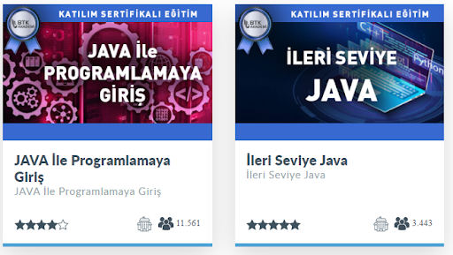
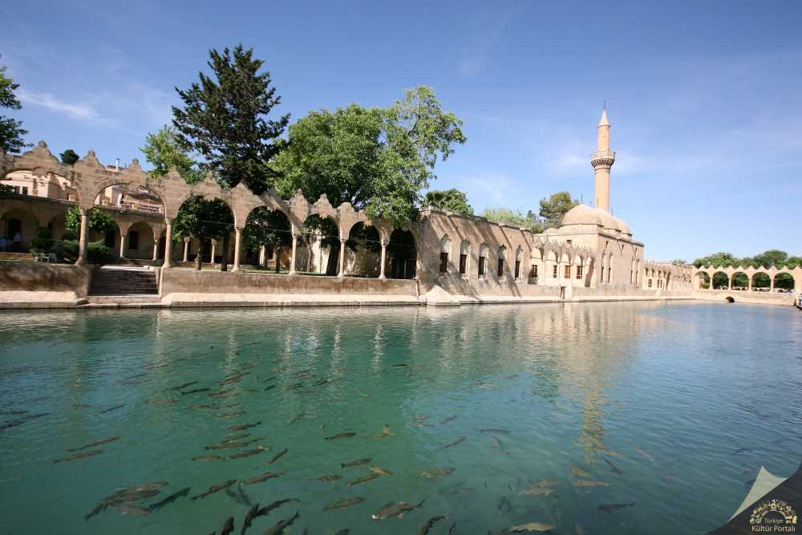

Boş zamanlarımda farklı yazılım dilleri öğrenmeye çalışıyorum. En son BTK Akademi'den
bu linteki java kursunu bitirdim.
Şu an javascriptin üstüne front-end'e dair başka teknolojiler öğrenmeye çalışıyorum.
Hakkımda sayfasında bahsettiğim gibi gezmeyi seviyorum. Salda Gölü'nün yanında sevdiğim yerlerden bir diğeri ise Şanlıurfa'ydı. Şanlıurfa'da balıklı gölü, birkaç müzeyi gezdik ve tanıdıkları ziyaret ettik.
Şanlıurfa'da en büyük sıkıntımız sıcaklık oldu. Bu kadar sıcak bir yere ilk defa gitmiştim. Urfa'nın şu anki sıcaklığını görmek için "GÖSTER" butonuna basabilirsiniz.